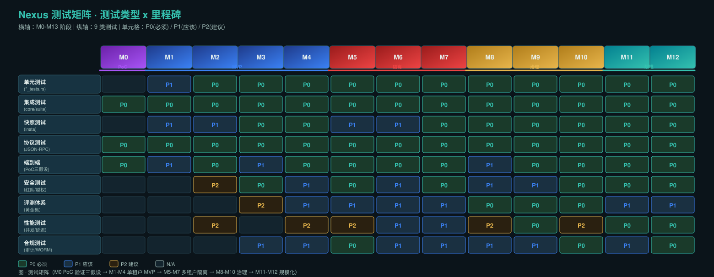

1. 测试分层体系
Nexus 平台采用九层测试体系，自底向上覆盖从代码单元到合规审计的全链路质量。每层有明确的工具链、运行策略和退出条件。
1.1 单元测试
pretty_assertions 深比较；不修改 process env；对整个对象 assert_eq。关键 crate: codex-core run_turn 分支、execpolicy parser/evaluator。
1.2 集成测试
test_codex + mount_sse_once + responses::sse + wait_for_event。agent 逻辑变更 MUST 新增。关键: app-server/tests/suite/v2/ 下 turn_start, thread_resume, compaction 等。
1.3 快照测试
TUI 用户可见输出。*.snap.new 审查 → cargo insta accept。UI 变更 MUST 附带快照。关键: tui/tests/suite/。
1.4 协议测试
app-server-test-client loopback + TestAppServer + just write-app-server-schema 漂移检测。v2 API 全覆盖。
1.5 端到端测试
①事件流不阻塞 Harness ②thread/resume 跨 Pod 可靠 ③审批跨进程持久化回写。M0 Go/No-Go。
1.6 安全测试
跨租户越权(四重取证)、提示注入(不可信内容不改变策略)、供应链、沙箱逃逸。季度红队演练。
1.7 评测体系
三类数据集(黄金/对抗/生产采样) + 五平面(完成率/工具正确率/安全拦截率/成本/体验)。模型/提示/工具/策略变更必跑回归。
1.8 性能测试
100+ 并发无级联失败；冷启动 < 5s；P95 时延达标；事件流吞吐无背压。k6 负载注入 + OTel trace。
1.9 合规测试
审计字段完整率 ≥ 99.9%；WORM 不可篡改；RLS 跨租户 0 泄露；沙箱自检清单全通过。
2. 关键测试用例（P0 级）
共 25 条 P0 级测试用例覆盖全 13 个里程碑。点击下方筛选器按阶段或类型筛选。
| ID | 标题 | 优先级 | 阶段 | 类型 | 预期结果 |
|---|
测试用例详情（可折叠）
3. 各阶段验收标准
对齐路线图 §7 各阶段验收标准。每个里程碑有明确的 Go/No-Go 条件。
4. 测试矩阵图

关键观察
- 集成测试和协议测试在所有阶段均为 P0 — 基线质量保证
- 端到端测试在 M0 和 M2 为 P0 — 验证三假设和执行闭环
- 安全测试从 M3 开始为 P0 — 高危拦截是安全基线，M5 越权演练是售卖门槛
- 评测体系从 M8 开始为 P0 — 没有评测就没有迭代权
- 性能测试在 M9 和 M11 为 P0 — P95 时延和并发承载是规模化门槛
- 合规测试在 M5、M10 为 P0 — 审计完整率和 WORM 是大客户准入条件
5. 反模式测试覆盖
对齐路线图 §8.1 八个高危反模式，每个反模式对应至少一个测试用例确保"正解"被验证。
| 反模式 | 正解 | 对应测试用例 |
|---|---|---|
| 让前端直连 Harness | 所有流量经网关 | TC-012 |
| 把 API Key 打进沙箱镜像 | 短期令牌 + Gateway 代理 | TC-006, TC-022 |
| 改 Harness 内核实现企业特性 | 配置驱动 + 事件桥接 | TC-005 |
| 用 LLM 判断"权限够不够" | 权限判定是代码策略 | TC-005, TC-017 |
| 只做逻辑隔离 | 逻辑+运行时+密钥+存储四重 | TC-007 |
| 审批状态存在 Harness 里 | 审批是控制面一等资源 | TC-004 |
| 会话只存本地 rollout | 事件流落云端为真相 | TC-001, TC-003, TC-011 |
| 先做通用助手再找场景 | 绑定高价值场景切入 | TC-019 |
6. 测试工具链与 CI 集成
6.1 Rust 测试工具链（遵循 AGENTS.md）
| 工具 | 用途 | 命令 |
|---|---|---|
just test | 统一测试入口 | just test 或 just test -p <crate> |
just fix | Clippy linter 修复 | just fix -p <crate> |
just fmt | 代码格式化 | just fmt |
pretty_assertions | 测试断言（清晰 diff） | use pretty_assertions::assert_eq; |
insta | 快照测试 | cargo insta accept -p <crate> |
mount_sse_once | mock SSE 响应 | responses::mount_sse_once(&server, responses::sse(vec![...])) |
wait_for_event | 等待事件 | wait_for_event(&codex, "turn/completed").await |
TestAppServer | app-server 集成测试 | TestAppServer::builder().build() |
write-app-server-schema | schema 固件生成 | just write-app-server-schema |
6.2 CI 门禁策略
| 触发条件 | 必跑测试 | 阻断条件 |
|---|---|---|
| 任何 PR | just test + just fmt + just fix | 任一失败 |
| 改动 app-server-protocol | just test -p codex-app-server-protocol + schema 生成 | schema 漂移 |
| 改动 TUI | just test -p codex-tui + 快照审查 | 快照未接受 |
| 改动模型/提示/工具/策略 | 评测回归（黄金集 + 对抗集） | 指标退化 |
| 阶段验收 | 该阶段所有 P0 测试用例 | 任一 P0 失败 |
7. 退出条件总结
| 里程碑 | 核心退出条件 | P0 用例数 |
|---|---|---|
| M0 | 三假设 Go + 落库幂等 + 沙箱自检 | 5 |
| M1 | 登录 + 建 Thread | 0 |
| M2 | 任务跑 + 消息存 + 断线重连 + compact 回溯 | 4 |
| M3 | 高危 100% 拦截 + 审批跨小时 + 注入防护 | 3 |
| M4 | 种子可用 + P0≥70% + 100% trace + 产物扫描 + fork | 4 |
| M5 | 越权 0 通过 + 租户禁用不可解密 | 2 |
| M6 | 成本归因 + 预算熔断不丢会话 | 2 |
| M7 | 沙箱零密钥 + 连接器独立上下线 | 3 |
| M8 | 变更门禁 + 失败定位 | 2 |
| M9 | P0≥85% + P95 时延 | 2 |
| M10 | 审计≥99.9% + 红队 100% 闭环 | 4 |
| M11 | 100+ 并发无级联 + 冷启动<5s | 2 |
| M12 | 私有化交付跑通 | 0 |
总计：25 条 P0 级测试用例覆盖全 13 个里程碑